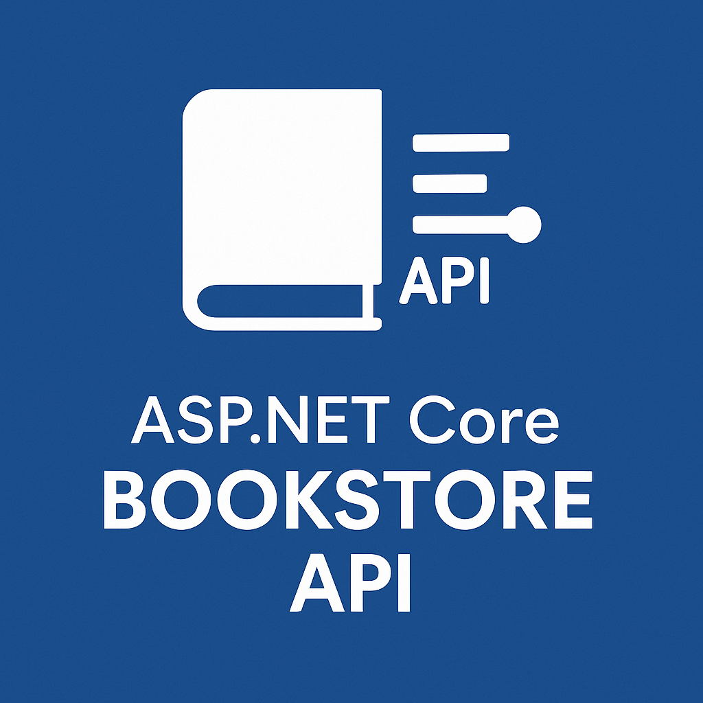
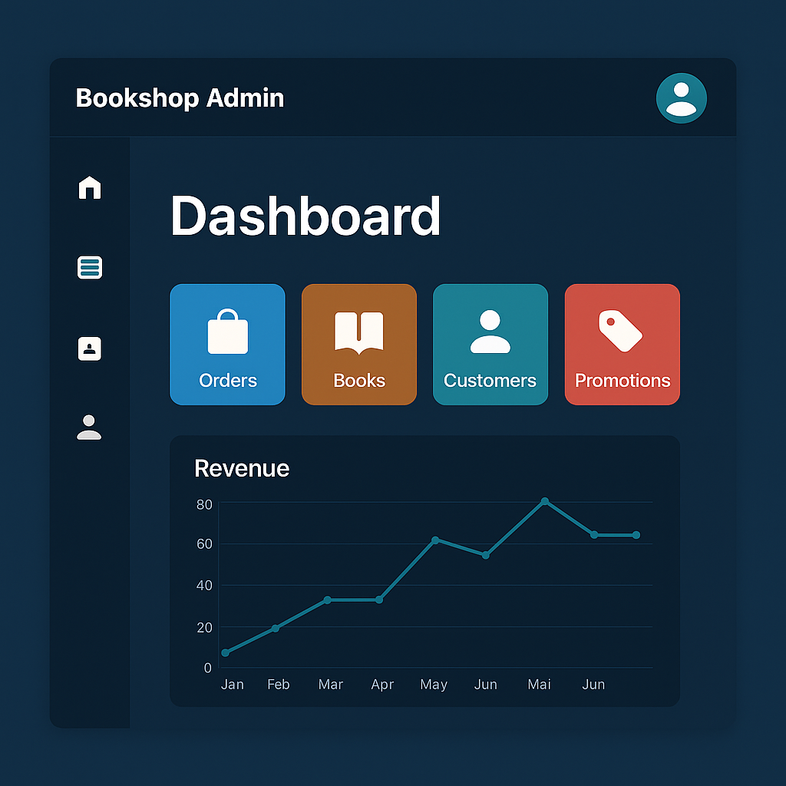

Bookshop RESTful API
A complete ASP.NET Core RESTful API for bookstore operations
(inventory, customers, staff, orders, promotions) built with a
clean Controller–Service–Repository architecture. It includes DTO
validation, soft deletion, role-based authorization, and JWT
authentication, plus email verification, secure password reset,
and dynamic search filtering.
Revenue analytics are built-in — yearly reports
and custom date-range statistics — to track performance over time.
The app is Dockerized (Dockerfile &
docker-compose) for one-command deployment with environment-based
configs, ready for CI/CD.
Click here to see my project source

Bookshop Admin Frontend
An admin dashboard for managing the bookstore, built with ReactJS and integrated seamlessly with the
Bookshop RESTful API
. It features secure staff authentication (JWT), CRUD management for books, categories, promotions, and orders, plus customer notifications via email.
Advanced tools include real-time revenue analytics (yearly & custom date range) and dynamic search/filtering. The interface is fully responsive, optimized with mdb-react-ui-kit for a clean, modern look.
The app is Dockerized for fast deployment and easy scaling.
Click here to see my project source
Bookstore E-commerce Website (FastAPI)
This e-commerce bookstore was developed to provide a seamless
online shopping experience for book lovers. It leverages a
powerful technology stack, including Spring Boot and Python
(FastAPI), to ensure efficient operations and personalized
recommendations. The underlying database is meticulously designed
in 3NF, guaranteeing data integrity and scalability. Users can
easily browse and purchase books, track their orders, and even
receive tailored suggestions based on their browsing history. For
administrators, the platform offers a comprehensive dashboard to
manage products, customers, employees, and sales data, providing
valuable insights through detailed analytics.
Click here to see my project source

Supply Management Project
This is a WinApp product used for managing a company specializing
in selling supplies. It encompasses inventory, employees,
warehouses, branches, customers, sales, purchases, and related
invoices. The application is designed to support distributed
database systems and is applied to standardize data into third
normal form (3NF) and distribute data across multiple servers to
ensure data security. It is developed using the C# programming
language for code processing, and .NET is utilized to build
desktop applications. DevExpress is employed for creating user
interfaces and generating reports.
Click here to see my project source

Book Store Management Project
This WinApp product was developed to manage a small bookstore,
encompassing books, employees, customers, sales, inventory, and
related invoices. It was specifically designed for the
Object-Oriented Programming (OOP) course and utilizes a database
to standardize data in the third normal form (3NF). The
application is built using Java to create objects and handle data
structures and algorithms. Additionally, Java Swing is used to
create user interfaces and relevant reports.
Click here to see my project source

Back-end Developer Portfolio Website
This website is dedicated to presenting my personal narrative and professional
endeavors in the realm of Software Development. It serves as a
conduit for engagement with esteemed employers, esteemed
clientele, and the broader community of skilled programmers. The
website is meticulously developed using HTML, CSS, and JavaScript,
and proudly bears my name on the DotTech domain. Upholding the
highest standards of data security, it is fortified with an SSL
certificate, as evidenced by the URL bar or at the site’s footer,
ensuring the confidentiality of user-submitted contact
information.
Click here to see my project source